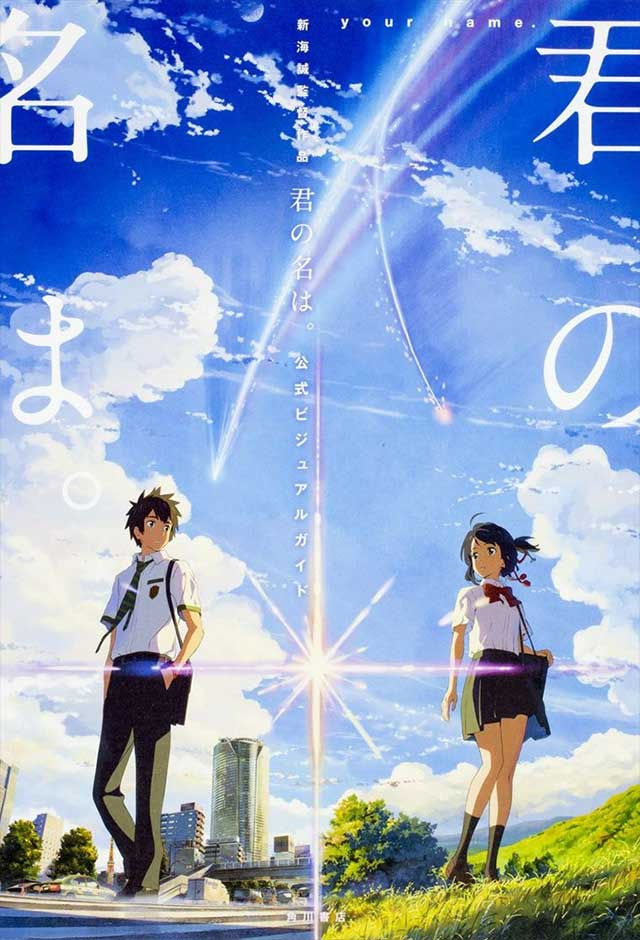

Your name
Mitsuha é a filha do prefeito de uma pequena cidade, mas sonha em tentar a sorte em Tóquio. Taki trabalha em um restaurante em Tóquio e deseja largar o seu emprego. Os dois não se conhecem, mas estão conectados pelas imagens de seus sonhos.
